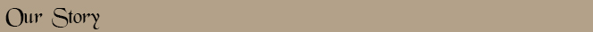
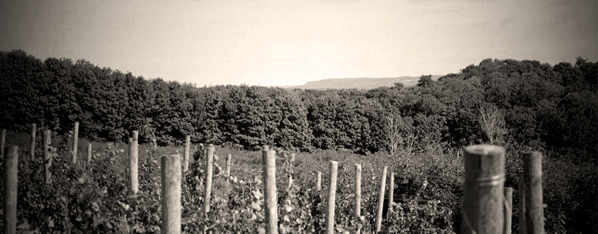
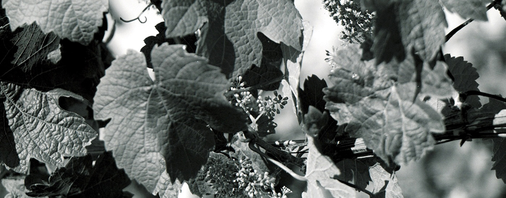

|
 Chapter one of our story started on a glorious spring day at the Arboretum in Ann Arbor Michigan. Heavily burdened engineering students, a girl from New Jersey and a boy from Kalamazoo met, fell in love and have been ever since. Our first experience with wine was shared on dates where time seemed long and money was short. The fare was simple and the wine as well. Strangely shaped bottles from Portugal or blue ones from Germany shared the table with food - the start of our unending fascination of wine/food pairing. The odyssey that entails our lives continued with the first of several moves across the country as our careers commenced. Our first life in California was a time of innumerable trips to Napa and Sonoma. We met huge names now, but little known then. Fantastic wines and flavors fanned the romantic dance between food and wine becoming our unifying principle. We traveled to France, lingering in Burgundy and loitering in Bordeaux. A deep-seated respect and love grew about the earth, soil, terroir concept and what wine can and should be. Still, throughout all these years, like homing pigeons we returned to Michigan to visit family and take a break from hectic lives with side trips to “up north”. Bill wanted to show Calla, our daughter, and me the irresistible Great Lake, bay and light that makes Leelanau so special. The seed was planted, so to speak, and the soil was fertile! Our tastes had already gone through the evolution process that naturally unfolds, from sweet whites to huge, “take my body” reds, to sophisticated whites and much dryer wines in general. I had started pursuing a certificate in wine production from UC Davis and completed my work after several years. This complemented my education in Chemical engineering and process control. Meanwhile, Bill worked hard at refining his taste buds (i.e. Bill enjoyed wine). He has tasted and expanded his wine and business knowledge and forged many personal winery relationships. In California, we experimented as garage wine makers with the vines in our backyard. We realized in early 2000 that we wanted to change our hobby to a business and explored California real estate for that potential. Fast forward to one trip up north, when on one rainy summer day, we decided to go wine tasting in Leelanau. The rest is history... After the epiphany that good wine can be made outside of the northern Californian zip codes, our minds were buzzing with possibilities. The puzzle was beginning to take shape. Chapter Two commenced on a mountain in northern California on January 1, 2006 when we bought our French Road farm and initiated our final launch sequence back home. This cast the die for our continuing epic venture and Chapter Three, our tasting room and winery. The unique geography formed by the Laurentide glaciers, along with trellis design, planting density, clonal types, varietal choices, along with the altitude, aspect and microclimate on French Road, constitute a prime location to grow vines. All of these factors allow our grapes to mature into the best expression of Leelanau soil transformed into wine. Wine is history unfolding into your glass and we are happy to be a small part of this grand pageant. Come and enjoy your time at Laurentide Winery! Acknowledgments The more you accomplish in life, the more thankful you must be. Without the efforts, support and love of those you permeate your life, we are truly alone. Thank you to all the workers whose countless hours have given us wonderful grapes and therefore wonderful wine. Thank you to our mentors and wine friends who have shown and taught us the beginnings of this business and smoothed our path. Thank you to the builders of our tasteful tasting room - a beautiful space for all. Thank you to the technology wizards who navigate our way through cyberspace and the investment gurus who understand enough to grant our vision. For those family and friends who have always been there to inspire, admonish, congratulate and smile, thank you. Thank you especially to my Mom and Dad and Bill's Mom and Dad. No words are adequate. And lastly, thank you to Calla, our little sun. You sweeten our wine and give purpose to our lives. - Susan & Bill Braymer |

Laurentide 2013 Sauvignon Blanc Traditional grape of Bordeaux and Sancerre, dry and distinctive aromas Laurentide 2011 Pinot Noir Burgundian premium varietal, dry and aged in oak barrels Pinot Noir Rose 2013 Seductive Dry Rose |
|||

